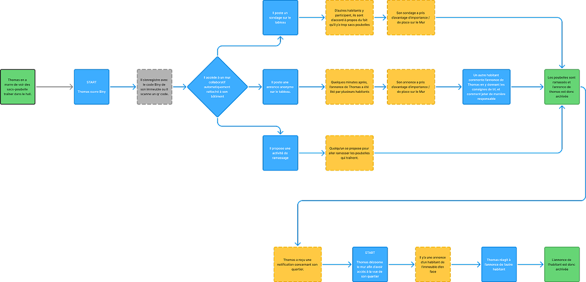

Contexte
Biny est une application sociale, qui vient en réponse à une éruption des problèmes liés à la gestion des déchets dans les immeubles urbains. Elle intervient dans un contexte où les Résidents/Proprios cherchent à renforcer la propreté et la participation citoyenne à l’échelle locale.
L'application cible principalement les grandes villes de France, notamment les immeubles d'habitation en copropriété ou en location collective, où les problèmes de gestion de déchets sont fréquents dans les parties communes.
Persona
Problématique
Comment faciliter la coordination entre Thomas et les autres locataires pour éviter que les déchets s'accumulent à l'entrée de l’immeuble ?
Le concept
Un service numérique type application tableau collaboratif, permettant aux habitants de s’organiser collectivement autour de la gestion et valorisation des déchets à trois échelles – l’immeuble, le quartier et la ville.
User flow
Low fidelity
Pages Immeuble/Quartier/Annonce
Page ville
Low fidelity V1
Mid fidelity
Le prototype
Tests utilisateurs
Retour n°1 : Des utilisateurs nous ont fait la remarque qu'ils ne savaient pas a quoi servait les boutons, on a donc écrit leur fonctionnalité juste en dessous pour une meilleure compréhension des nouveaux utilisateurs.
Retour n°2 : On nous a fait la remarque qu'il n'y avait que des post-its en mode anonyme et qu'il manquait des post-its en non anonyme. On a donc rajouter ça.
Retour n°3 : Modification des filtres, on a rendu les filtres plus gros car ils ne se voyaient pas assez et on a améliorer le contraste quand on sélectionne un filtre
Perspectives d’évolution
Voici les différentes perspectives d'évolutions que nous prévoyons de faire pour améliorer notre application :
- - Ajoutez de nouveaux modules tel qu'un module pour faire des vocaux etc. ;
- - Ajoutez une catégorie dans le profil pour voir tout nos likes ;
- - Ajoutez des catégories visibles sur les post-it pour permettre au filtres de mieux filtrer les posts-it et permettre d'ajouter automatiquement ces catégories à la création de posts-it ;
- - Améliorer le système de filtres en ajoutant plus de filtres ;